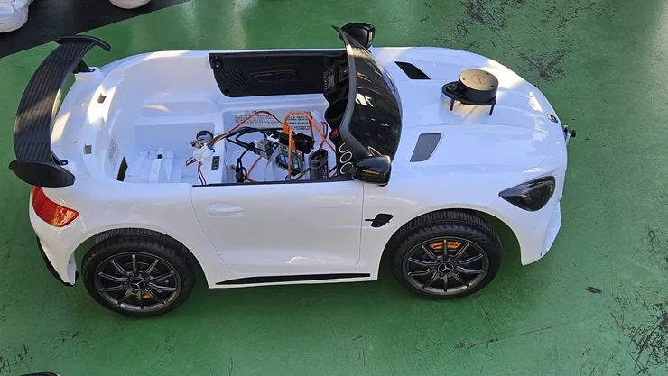
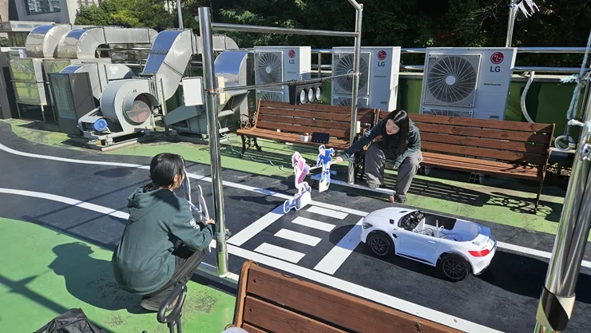
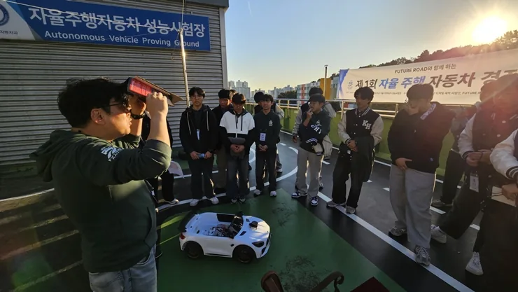
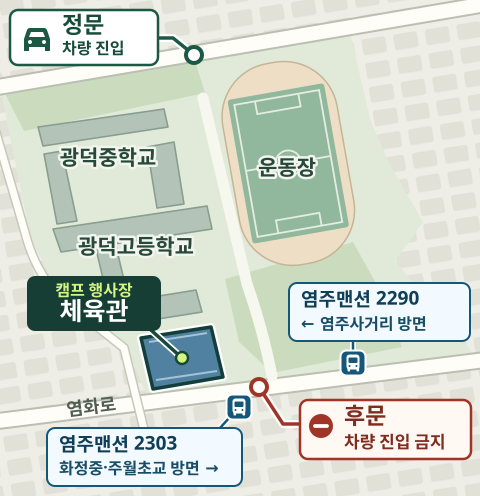

01 / 04 · 제작
누구를 위한 차량일까요?
학교에서 옮기기 어려운 물건을 떠올려 보세요. 팀이 정한 용도에 맞춰 차체와 구동부, 제어부를 조립하고 바퀴가 의도한 방향으로 움직이는지 확인합니다.
지역 고등학교 9개 팀이 생활 속 운반 문제를 찾고, 팀마다 오토트래시 한 대를 직접 제작해 주행 코스에서 시험합니다.
11월 20일(금)–21일(토)
광덕고등학교 체육관 · 오시는 길비숙박 2일
배경 사진 · 2025년 제1회 경진대회 주행 코스
연계 사업 전남광주통합특별시교육청의 융합교육(STEAM) 활성화 교구 지원 사업 · 창업교육거점센터 연계 프로그램
주관 광덕고등학교 행사 지원 퓨처로드 교과연구회

학교에서 옮기기 어려운 물건을 떠올려 보세요. 팀이 정한 용도에 맞춰 차체와 구동부, 제어부를 조립하고 바퀴가 의도한 방향으로 움직이는지 확인합니다.
팀이 수집한 주행 데이터로 자율주행을 구현합니다. 예상과 다르게 움직인 구간을 찾아 차량이나 프로그램을 수정한 뒤 같은 조건에서 다시 시험합니다.

정지선에서는 멈추고 앞차가 느리면 차로를 바꿉니다. 두 번의 실증 기회 사이에 첫 주행에서 발견한 문제를 보완할 수 있습니다.

팀 활동지를 펴고 사용자 문제, 제품의 기능, 테스트 전후 달라진 점을 설명합니다. 코스에서 확인한 기능과 앞으로 검증할 기능을 구분해 발표합니다.
4분 발표 준비하기 ↓금요일 22:00 귀가 · 토요일 09:00 재집결 장소 보기 ↓
11월 21일(토) 14:20–16:20, 각 팀의 오토트래시가 체육관 코스를 시계 방향으로 한 바퀴 돕니다. 기본 주행거리는 약 43m입니다.

파란 선은 주행 경로 예시이고 주황색 화살표는 모형의 이동 방향입니다. T1·T2는 운영 기준점으로 노면에 표시하지 않습니다. 앞지르기 경로와 보행자 모형 투입 시점은 현장 시험에 따라 조정합니다.
제품 피칭은 우리 팀이 만든 차를 처음 보는 사람에게 누가, 언제, 왜 이 차를 쓰면 좋은지 설명하는 짧은 발표입니다. 듣는 사람이 그 장면을 떠올리게 한 다음, 실제로 차를 달려 보며 무엇을 확인했는지 들려주세요.
학교·팀명을 고른 뒤 네 문항에 한두 문장씩 답하세요. 팀에서 한 명이 대표 발표 전에 제출하면 됩니다.
설문을 열 때 Google 로그인을 요청할 수 있습니다. 접속이 어려우면 PDF로 문항을 확인하고 지도교사에게 알려 주세요.
11월 21일(토) 16:20–17:10 · 팀 대표 학생 발표 4분 · 질의응답과 팀 교체 1분
별도 PPT 없이 팀 활동지를 사용합니다. 심사에서는 문제와 제품 기능이 어떻게 연결되는지, 팀이 무엇을 시험하고 개선했는지, 그 결과를 듣는 사람에게 얼마나 분명하게 전달하는지 살펴봅니다.
아래 시간은 4분을 나누어 연습하는 예시입니다.
발표 흐름을 보여주는 가상 사례입니다. 실제 발표에는 팀이 직접 기록한 관찰과 결과를 사용하세요.
“우리 학교 급식 당번은 빈 우유 상자를 수거 장소까지 여러 번 나릅니다. 저희는 당번이 상자를 싣고 수거 장소에서 내려 받을 수 있는 운반차를 구상했습니다. 복도에서는 사람과 마주치기 때문에 멈추는 기능부터 시험했습니다.
첫 주행에서는 차가 횡단보도에 너무 가까이 다가간 뒤에야 멈췄습니다. 저희는 횡단보도에 접근하는 속도를 낮췄습니다. 다시 달렸을 때는 차 앞부분이 횡단보도에 들어가기 전에 멈추는 것을 확인했습니다.
오늘 시험한 차에는 상자를 싣지 않았습니다. 다음에는 상자를 실었을 때도 같은 위치에서 멈출 수 있는지 빈 차와 비교해 보겠습니다.”
팀원 한 명은 시간을 재고, 대표 학생은 활동지만 보며 설명해 보세요. 듣는 팀원은 “누구를 위한 차였지?”, “무엇을 바꾸니 주행이 어떻게 달라졌지?”에 자기 말로 답해 보세요. 기억나지 않는 대목이 있다면 그 부분을 한 문장 더 구체적으로 고치세요.
예상 질문 “상자를 실어도 같은 위치에서 멈추나요?”
답변 예시 “오늘 확인한 것은 빈 차의 정지 위치입니다. 상자를 실은 조건은 아직 시험하지 않았고, 다음에는 같은 속도에서 정지 거리를 비교할 계획입니다.”
| 학교명 | 팀명 |
|---|---|
| 광주동신여자고등학교 | 동신동덕 |
| 광주인성고등학교 | 아이작 |
| 조선대학교부속고등학교 | 리듬타 |
| 동일미래과학고등학교 | 동일모터스 |
| 빛고을고등학교 | 빛고을 모빌리티 |
| 광주소프트웨어마이스터고등학교 | 아잉(AING) |
| 광덕고등학교 | 오소프 |
| 금호고등학교 | 플라잉카 |
| 설월여자고등학교 | 코드베이스 |
완주·기록·제어 안정성과 기획·제작·개선·피칭 과정을 함께 평가합니다. 학교별 한 영역 시상이 원칙이며, 제한시간·감점·재주행 등은 별도 심사 기준을 따릅니다.
토요일 14:20 최종 실증 · 16:20 제품 피칭 · 17:30 시상식
방문 전 교육정보부에 관람 가능 여부와 입장 방법을 확인해 주세요. 현장에서는 코스 밖 통로를 이용해 주세요.
차량은 광덕중학교 쪽 정문으로만 들어오세요. 체육관 쪽 후문은 보행자 전용입니다.

학교 주소 · 광주 서구 화정로 202
교육정보부 062-380-6789